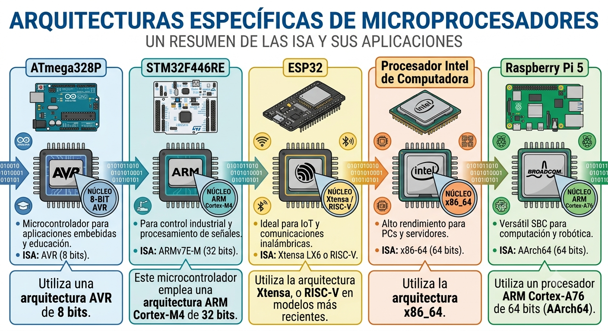

EL PROCESO DE COMPILACIÓN
La Compilación Nativa
1. COMPILAR EL CÓDIGO Y PROGRAMAR EL CHIP
La compilación es transformar el código que hemos escrito en un lenguaje de programación entendibe por el ser humano, en un lenguaje que la máquina "entienda". La compilación finaliza cuando las herramientas generan los archivos ELF y HEX en la computadora.
En el ambito de las PC, programar es crear una aplicación para un SO. Sin embargo, en el desarrollo de sistemas embebidos, la palabra "programar" tiene un doble significado según el contexto en el que estemos trabajando:
- Cuando estamos en nuestra estación de trabajo con un editor de texto o un IDE, programar ignifica escribir las líneas de código fuente en un lenguaje determinado (desarrollar/codificar), de alto o bajo nivel.
- Cuando estamos en la mesa de trabajo del laboratorio o del taller, manipulando hardware, "programar el chip" significa grabar/flashear el firmware dentro de la memoria del microcontrolador. De hecho, a las herramientas físicas que transfieren el código (como el ST-Link, JTAG o Pickit) se les llama literalmente "Programadores" (Hardware Programmers).
En sistemas embebidos, "quemar", "flashear" o "cargar" son los pasos finales para transferir ese código ya traducido a la memoria del microcontrolador para que pueda ejecutarlo; es una fase posterior a la compilación donde ese archivo se transmite físicamente a la Flash del microcontrolador para que este pueda ejecutarlo de forma independiente. Quemar es un término antiguo que antes se usaba para los chips que se grababan una sola vez (ROM/PROM), pero hoy se usa como sinónimo de flashear.
2. LA COMPILACIÓN DE UN PROGRAMA.
Compilar consiste en transformar el código fuente de un programa escrito por un ser humano en un lenguaje de programación - como C o C++ - en instrucciones máquina que el procesador puede ejecutar directamente (en una pc, será el cpu de la computadora; en sistemas embebidos, será el procesador del microcontrolador). Esa tarea la hae un programa llamado compilador
Cuando ejecutas un programa en una PC, el sistema operativo (Windows, Linux) se encarga de cargarlo en la memoria RAM, darle permisos y gestionarlo.
En la mayoría de microcontroladores no hay sistema operativo. El código que grabas toma el control total del chip desde el momento en que recibe energía. Ese programa se llama firmware. En lugar de pedirle cosas al sistema operativo, el código lee y escribe directamente en direcciones fijas del chip para encender un pin, enviar datos por puerto serie o reaccionar cuando alguien presiona un botón.
Un bloque de código simple como:
int suma(int a, int b) {
return a + b;
}es legible para el programador, pero el chip necesita secuencias numéricas concretas para operar. Durante la compilación, las herramientas analizan la sintaxis, aplican optimizaciones y generan el código máquina adecuado para el chip de destino.
3. LA TOOLCHAIN DE COMPILACIÓN
El término "compilar" abarca en realidad un flujo de varias herramientas en cadena (toolchain).
Una toolchain de compilación (o cadena de herramientas) es el conjunto integrado de programas y utilidades de software que los desarrolladores utilizan para transformar el código fuente de un programa en un archivo ejecutable que una computadora o un microcontrolador puede entender y ejecutar. Existe un flujo de trabajo estrictamente definido donde no se puede alterar el orden de los pasos ni omitir una etapa sin romper el proceso de construcción.
El producto final de la toolchain por lo general es un archivo binario o imagen de firmware (como un archivo .bin, .hex o un ejecutable listo para el sistema operativo) que contiene el código máquina necesario para que el hardware de destino lo ejecute directamente.
4. LA COMPILACIÓN NATIVA
Se denomina compilación nativa al proceso mediante el cual un compilador genera un programa destinado a ejecutarse sobre la misma arquitectura donde dicho compilador está funcionando.
En Windows el compilador nativo y oficial es MSVC (Microsoft Visual C++). Es el estándar en windows desarrollado por Microsoft. A diferencia de los sistemas operativos basados en Unix (como Linux o macOS), Windows no incluye un compilador de C o C++ preinstalado por defecto en el sistema operativo básico. Se incluye principalmente al instalar el entorno de desarrollo Visual Studio.
En sistemas Linux, GCC (GNU Compiler Collection) es el compilador estándar y nativo principal.
Cuando desarrollamos código en una computadora cuya arquitectura es idéntica a la del microcontrolador de destino, o que seá ejecutado en nuestra propia computadora, se utiliza un compilador nativo (native compiler) y requerimos una toolchain de compilación nativa (native compilation toolchain). Esta no solo genera código máquina para la misma arquitectura, sino que también proporciona el conjunto de herramientas, bibliotecas y utilidades necesarias para construir aplicaciones destinadas a ejecutarse directamente en el sistema operativo de nuestra estación de desarrollo.
Cuando comenzamos a programar microcontroladores es común pensar que el proceso de compilación es igual al que se utiliza para crear aplicaciones en Windows, Linux o macOS. Después de todo, en ambos casos escribimos código en C o C++, lo compilamos y obtenemos un programa ejecutable. Sin embargo, detrás de esa aparente similitud existe una diferencia fundamental: un microcontrolador no ejecuta el mismo tipo de programas que un computador; la mayoría de microcontroladores no tiene sistema operativo (esquema conocido como bare-metal), su arquitectura, su memoria y su forma deargar el código hacen que el proceso de compilación sea diferente.
El compilador GCC (GNU Compiler Collection)
La colección de compiladores GNU (GCC) fue escrito originalmente como el compilador para el sistema operativo GNU promovido por la Free Sotware Foundation . Proporciona interfaces de compilación para varios lenguajes, incluidos C, C++, Objective-C, Fortran, Ada y Go. También incluye bibliotecas de soporte en tiempo de ejecución para estos lenguajes.
GCC proporciona varios niveles de comprobación de errores en el código fuente, similares a los que ofrecen otras herramientas (como lint), genera información de depuración y puede realizar diversas optimizaciones en el código objeto resultante. GCC es compatible con diversas arquitecturas y sistemas operativos .
Supongamos que estamos trabajando en un equipo que corre bajo linux, específicamente una Raspberry Pi 5. La Raspberry Pi posee un procesador ARM64 y el compilador GCC instalado por el sistema operativo también se ejecuta sobre esa arquitectura, este se encarga de compilar programas que se ejecutan directamente en la arquitectura de la Raspberry Pi 5 (ARM64).
5. LA NECESIDAD DE UTILIZAR UN COMPILADOR CRUZADO
Aunque todos los procesadores ejecutan instrucciones binarias, cada arquitectura de procesador define su propio conjunto de instrucciones (Instruction Set Architecture o ISA). Pero no existe un único lenguaje máquina. Cada familia de procesadores posee su propio conjunto de instrucciones (Instruction Set Architecture o ISA).Por ello, el compilador debe generar un código específico para la arquitectura del procesador donde se ejecutará el programa.
Por ejemplo:
- Un procesador Intel y AMD para PC utiliza la arquitectura x86_64.
- Una Raspberry Pi 5 utiliza un procesador ARM Cortex-A76 de 64 bits (AArch64).
Debido a que cada arquitectura utiliza un conjunto de instrucciones diferente un lenguaje máquina diferente, un programa compilado para una PC con arquitectura x86-64 no puede ejecutarse en una Rapberry pi. Tampoco puede ejecutarse en un microcontrolador AVR o ARM Cortex-M, ya que ambos utilizan arquitecturas distintas y requieren instrucciones de máquina diferentes.
- Un ATmega328P utiliza la arquitectura AVR de 8 bits.
- Un STM32F446RE utiliza la arquitectura ARM Cortex-M4 de 32 bits.
- Un ESP32 emplea la arquitectura Xtensa LX6 (o RISC-V en modelos recientes).

Cada una de estas arquitecturas posee:
- Instrucciones diferentes.
- Registros diferentes.
- Distintos tamaños de palabra.
- Diferentes modos de direccionamiento.
- Distintos mecanismos para acceder a la memoria y a los periféricos.
En consecuencia, un programa compilado para una arquitectura no puede ejecutarse sobre otra distinta.
Cuando el desarrollo se realiza en una computadora cuya arquitectura es diferente de la del microcontrolador de destino, se utiliza un compilador cruzado cross compilery requerimos una toolchain de compilación cruzada (cross-compilation toolchain). Esta no solo genera código máquina para otra arquitectura, sino que también proporciona el conjunto de herramientas, bibliotecas y utilidades necesarias para construir aplicaciones destinadas al sistema embebido objetivo.
Comprender estas diferencias nos permite comprender por qué no basta con el compilador nativo de la PC donde escribimos el código para programar nuestro microcontrolador, que implica una compilación cruzada y por qué existen compiladores específicos como AVR-GCC, ARM-GCC, xtensa-esp32-elf o riscv32-esp-elf
Pero esto es materia del siguiente artículo